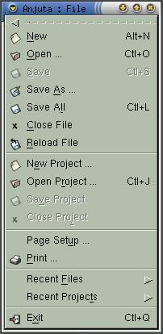
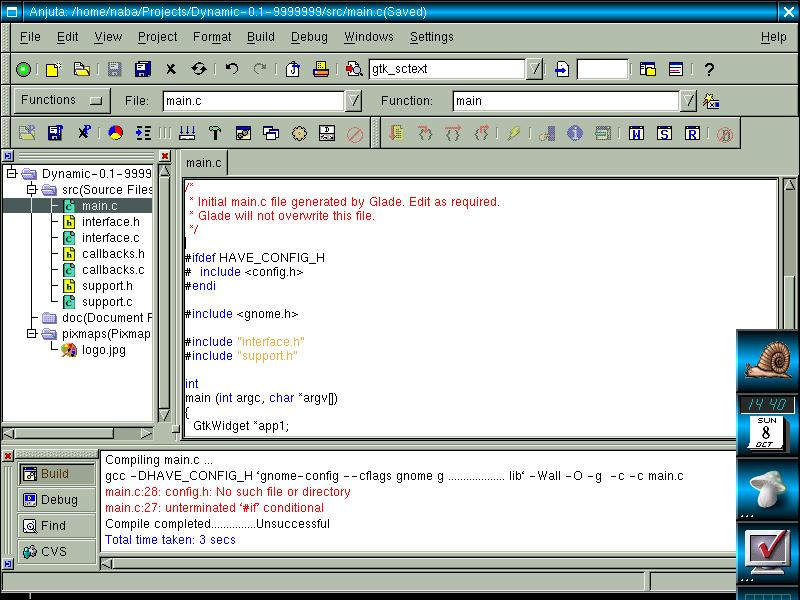

Anjuta Manual version 0.1Copyright (c) Kh. Naba Kumar Singh |
| Contents | Index | Shortcuts |
| PREV: Introduction | UP: Contents | NEXT: File Operations |
The top most part of the Anjuta IDE is the menu bar. Almost all of the functionalities are available by activating the appropriate menu item. The functions have been grouped according to their type of operations. For instance, most of the file and project operations have been grouped in the sub-menu 'File'. Similarly, The other sub-menus contain the operations they are grouped to.
|  | The main menu is detachable. Drag it from the
main window using the handle at the extreme right. Once it is
detached, it will become a floating menu.
All the Sub-menus in the main menu are detachable. You can detach it by clicking the detach bar on the sub-menu (just above the first item). Once the sub-menu is detached, it will be shown as an independent window. A detached menu is shown as an illustration. |
Tool-bars:
To make the life easier, all those operations which are performed very often are made available from the tool-bars. There are basically four tool-bars on the main window. They are:
It would be worth spending some time getting familiar with the tool-bar buttons. Tool tips describing the function of the tool-bar buttons will appear as soon as you move the mouse over the buttons. Read and remember them carefully. Tool-bars avoid the unnecessary selection of menu items which are used very often.
You will find some combo (entry) boxes on the tool-bars. They are explained in the later section.
Similarly, to make the life still more easier, short cuts are available for those operations that are performed very often. All the keyboard short cuts are given along with their corresponding menu item. You must remember some of them, for they become handy while you are typing into the editor and you don't want to leave the keyboard.
Main Window:

In the main window, there are three frames that you must be familiar with, before you start doing anything (All of them may not be visible when you start Anjuta). They are called:
The frame on the left is the Project window, on the right is the Editor window and the one at the bottom is the Message window. The project window and the message window can be detached into separate windows instead of docking them into the main window. You can detach them by clicking the the detach button (You will find them along with the frames: the small buttons with the un-docking icon). Similarly, you can hide them, by clicking the hide buttons (small buttons with the red cross). You can make them visible anytime by activating the menu items View/Project listing and View/Message, respectively, or by clicking the corresponding tool-bar buttons in the main tool-bar.
The colors with which the messages are displayed in the message window are very important to note. Messages displayed in normal color (usually black) are normal messages. Those displayed in Blue are usually important messages such as error messages or some important information. Messages shown in Red color are Hot linked. That is double clicking on such a message will take you to the particular file and line number specified in the message.
For example, when you compile a buggy file, some messages in red will appear in the message window which tell where is the error and what sort of error is that. Double clicking on such messages will open the file and hi-lite the line containing the error.
All these three frames are realizable. Try adjusting them by dragging the handle bars separating them.
Things to note:
One last thing I should tell you in this section is that, all the settings, including all the window sizes and window positions, are saved when you exit Anjuta Then they are all set again when you next restart Anjuta Session management is still under development. So you should not exit Anjuta with any unsaved document. Of course, Anjuta will display a warning if you try to exit Anjuta with unsaved document(s) still opened.